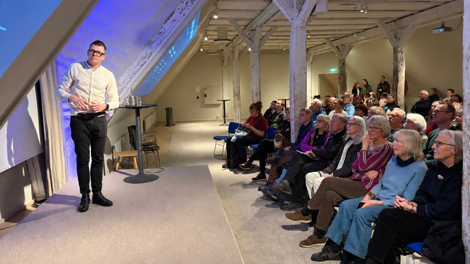

Press & media
For journalists
Portraits, background information and contact details for coverage of ancient DNA, past ecosystems and environmental change.
Interviews & enquiries
mwpedersen@sund.ku.dk · +45 29 27 53 42
I welcome enquiries about ancient environmental DNA, biodiversity through time, Arctic ecosystems and the relationship between people and their environments.
Download individual images in full resolution. Please include the photographer credit where shown. Contact Mikkel for questions about image use.
Press portraits


Talks and teaching



Arktisk Festival — on stage
Photo: Mads Lumholt
Cropped and retouched.
1672 × 941 px · 2.5 MB
Download · PNG

Background information
Short biography
Mikkel Winther Pedersen is an Associate Professor at the Globe Institute, University of Copenhagen, where he leads the Palaeo-Environmental Genomics Group. He studies DNA preserved in soil and sediments to reconstruct past ecosystems and understand how climate and human activities have shaped biodiversity. His work combines geography, genetics and bioinformatics, with field research spanning the Arctic and beyond. He contributed to the discovery of a two-million-year-old ecosystem in Greenland using environmental DNA.
CV updated November 2026
Science beyond academia
Selected public engagement
Examples of documentaries, public talks, articles and conversations about my research.
Documentary · 2024
Hunt for the Oldest DNA
I feature in Niobe Thompson’s documentary about the discovery of ancient DNA and a two-million-year-old ecosystem in Greenland.
Public lecture · 2026
The world’s oldest DNA: A window into Greenland’s past
At Arktisk Festival, I spoke about the DNA from Kap København and what it reveals about Greenland’s past plants, animals and climate.
Popular science · 2026
Ancient DNA in Danube sediments
Giulia Zampirolo and I wrote a popular science article for Videnskab.dk about ancient DNA, past human activities and environmental change along the Danube.
Public Q&A · 2024
Ask Me Anything with PBS NOVA
A public Reddit Q&A with PBS NOVA about the discovery of the world’s oldest DNA, accompanying Hunt for the Oldest DNA.
Radio · 2026
NPR / Short Wave
I contributed expert commentary on ancient squirrel droppings as archives of Ice Age DNA in NPR’s science news roundup on 11 June 2026.
Radio · 2023
Radio4: Missionen
I joined the programme “Vi sikrer artens overlevelse” on 29 March 2023, discussing species survival and biodiversity alongside other invited guests.
Television · 2018
Jagten på den sidste dinosaur
I took part as the DNA researcher in this DR2 documentary series following an expedition to the Republic of the Congo with Christoffer Knuth.
Public lecture · 2018
Vin & Videnskab: Copenhagen’s underground history
At the Natural History Museum of Denmark’s event on 7 November 2018, I presented how sediment cores from the Botanical Garden reveal Copenhagen’s history through the City Core project.
Festival talks · 2021–2022
Kultursalonerne Gisselfeld
Public talks about the stories preserved in DNA from mud and how DNA research can shed light on Gisselfeld’s history, bringing science into a festival of music, literature and ideas.